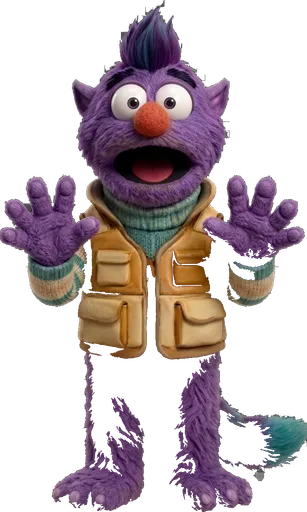
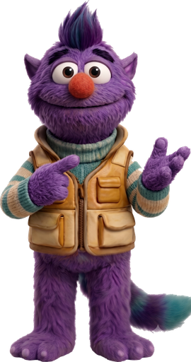
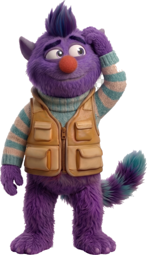
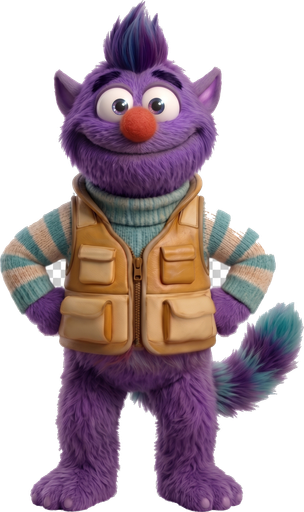
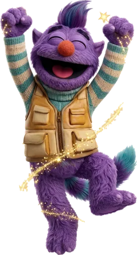

me trying to fake sign language 💀

Zippy: not on my watch 👀

it catches EVERY fake sign
✓
Hand shape
✓
Location
✓
Movement
✓
Expression
✗
✓
Palm direction

FIXED IT 🎉


🔥 streak +1
+50 XP
LEVEL UP
free. no downloads. no catch.

QuickSign
learn ASL by doing 🤟 free